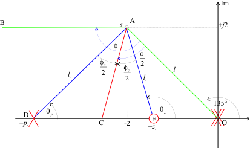

Figure 1 Angle contribution of a lead compensator
Lecturer
Set up MATLAB
cd matlab
pwd
clear all
format compact
The proportional plus derivative compensator has the unfortunate property that its high frequency gain is infinite. This means that high frequency effects, such as sensor noise and un-modelled high-frequency dynamics, e.g. resonance terms, will be amplified with potentially disastrous effects. Of course, a real physical derivative operator cannot be implemented and any implementation will actually have poles that will limit the high-frequency gain.
Recognizing this, an alternative to the pure P+D
$$D_{\mathrm{P+D}}=K_D s + K_{\mathrm{prop}}$$is the so-called "lead compensator"
$$D_{\rm{lead}}(s) = {K_c}\left( \frac{s - z_0}{s - p_0}\right)$$where
$$|p_0| > |z_0|.$$Considering the frequency response of $D_{\mathrm{lead}}$
$$D_{\mathrm{lead}}(j\omega) = K_c\left(\frac{j\omega-z_0}{j\omega-p_0}\right)$$The low and high-frequency gains are:
so that the ratio of high-to-low frequency gain is
$$\frac{D_{\mathrm{lead}}(j\infty)}{D_{\mathrm{lead}}(j0)}=\frac{p_0}{z_0}>0$$The lead compensator is still a high-pass filter but the pole at $s=p_0$ limits the high frequency gain. Typically, the ratio of $p_0$ to $z_0$ is kept to below 10.
Figure 1 Angle contribution of a lead compensator
The net contribution is
$$\phi_c = \theta_z - \theta_p > 0$$so that the lead compensator always makes a positive contribution to the angle criterion.
This has the effect of allowing the closed-loop poles to move to the left in the s-plane.
The problem is then how to choose the relative location of the pole and the zero.
We reproduce the advice of D'Azzo and Houpis (1975).
For a Type 1 system, the real pole (excluding the pole at zero) that is closest to the origin should be cancelled.
For a Type 0 system, the second closest pole to the origin should be cancelled.
Define the plant
G1 = tf(1,conv([1, 0],[1, 1])); H=1;
Plot root-locus
rlocus(G1*H)

Clearly, we cannot achieve a closed-loop pole at $s_1 = -2 + j2$ without some dynamic compensation.
However, if we use the zero of a cascade lead compensator to cancel the pole at $s = -1$ and place the pole at $s = -4$ we get:
D1 = zpk([-1],[-4],1);
Go1 = D1*G1*H;
rlocus(Go1)

which will have a closed-loop pole at the desired location when the gain is
Kc = rlocfind(Go1,-2+2j)
Note
You should be aware that the lead compensator zero will still appear in the closed-loop transfer function, and you should verify that the closed-loop step response is acceptible.
 Figure 2 Graphical construction for locating the pole and zero of a lead compensator.
Figure 2 Graphical construction for locating the pole and zero of a lead compensator.
The steps in the location of the lead-compensator pole and zero are as follows (refer to Figure 2).
Requiring a closed-loop pole $S_1 = -2 + j2$, the geometry of the problem is illustrated in Figure 3.
 Figure 3 Lead compensator design for the satellite attitude control problem.
Note that the line drawn from the origin to the point s1 subtends an angle of $135^\circ$ to the positive real axis.
We can use MATLAB to help to work through the trigonometry. The angle contribution of the plant and feedback at $s_1$ is obtained as follows.
G = tf(1,[1,0,0]);
H = 1;
GH = G*H;
s1 = -2+2j;
The total contribution of the plant poles and zeros can be calculated directly using the Matlab equivalent of the angle criterion
[zeros,poles,gain]=zpkdata(GH,'v');
contribution in degrees
contrib = (180/pi)*(sum(angle(s1 - zeros)) - sum(angle(s1 - poles)))
The root locus angle criterion gives lead contribution
$$\begin{array}{c}\angle G({s_1})H({s_1}) + {\phi _c} = - {180^ \circ }\\{\phi _c} = - {180^ \circ } - \angle G({s_1})H({s_1})\end{array}$$phi_c = -180 - contrib
half_phi_c = phi_c/2
Because the line BA and OD are parallel, the angle subtended by the line OAB is also $135^\circ$. Thus
angle_OAB = 135;
angle_BAD = angle_OAB/2 - half_phi_c;
angle_BEO = angle_OAB/2 + half_phi_c;
and by parallel line theory
theta_p = angle_BAD
theta_z = angle_BEO
The pole and zero locations are given by
p0 = -2-2/tan(theta_p*pi/180)
z0 = -2-2/tan(theta_z*pi/180)
The compensator gain is obtained using the gain criterion. With MATLAB, this can be calculated directly from the gain formula:
$${K_0} = \left( \frac{\left| s_1 - p_0 \right|}{\left| s - z_0 \right|} \right)\left( \frac{\prod\limits_{i = 1}^{n - 1} \left| s_1 - p_i \right| }{\prod\limits_{j = 1}^{n - 1} \left| s_1 - z_j \right|} \right)$$Ko = (abs(s1-p0)*prod(abs(s1-poles)))/(abs(s1-z0)*prod(abs(s1-zeros)))
Let us also check this result using the root locus.
D = zpk(z0,p0,1);
Go=D*GH;
rlocus(Go)

Kc = rlocfind(Go,s1)
Finally, let us calculate the step response and compare it with the result achieved with velocity feedback
$$G_1(s) = \frac{8}{s^2 + 4s + 8}$$and proportional + derivative compensation
$$G_2(s) = \frac{4(s+2)}{s^2 + 4s + 8}$$G1 = tf(8,[1, 4, 8]);
G2 = tf(4*[1, 2],[1, 4, 8]);
G3 = feedback(Kc*D*G,H)
[y1,t1]=step(G1);
[y2,t2]=step(G2);
[y3,t3]=step(G3);
plot(t1,y1,t2,y2,t3,y3),legend('Velocity fb','P+D','cascade lead'),title('Lead compensation: Comparison of results')

When evaluating the third design you should take into account the location of the compensator zero and the third closed-loop pole (at $s = -2.828$) relative to the desired closed-loop pole at $s_1$.
The third method referenced in D'Azzo and Houpis addresses a problem with lead compensator design that has so far not been addressed. That is that only the desired transient performance, and hence the desired location of the dominant closed-loop poles, is considered. The desired system gain is not specified. A method of achieving both gain and desired pole location has been proposed by Phillips and Harbour (1988) and is considered in the Analytic Root Locus Design section (not assessed).
An executable version of this document is available to download as a MATLAB Live Script file cclead.mlx.
The Simulink model which compares the results of the satellite attitude control system compensated with velocity feedback, P+D compensation and lead compensation is lead_compensation.slx.